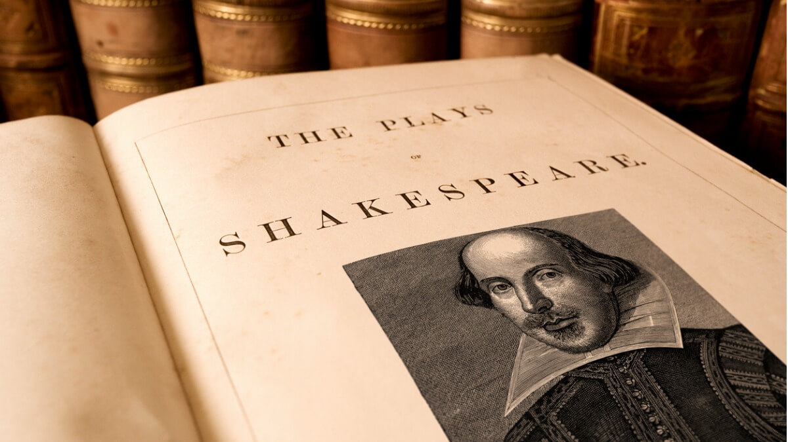

Sobre:
País de riqueza histórica e cultural com pouquíssimas nações que a equiparam em nível global, a Inglaterra possui enormes influências sobre o resto do mundo em diversas áreas. Para facilitar o entendimento, vamos abordar alguns dos traços mais marcantes do povo inglês e de sua cultura.
Artes
É grande a lista de artistas que alcançaram um estrondoso sucesso mundial e têm origem na Inglaterra. Na literatura, basta pensa em William Shakespeare, Charles Dickens, Tolkien e J. K. Rowling. Na música, Beatles, Rolling Stones, Queen, Pink Floyd e Adele. E é melhor parar por aí.
